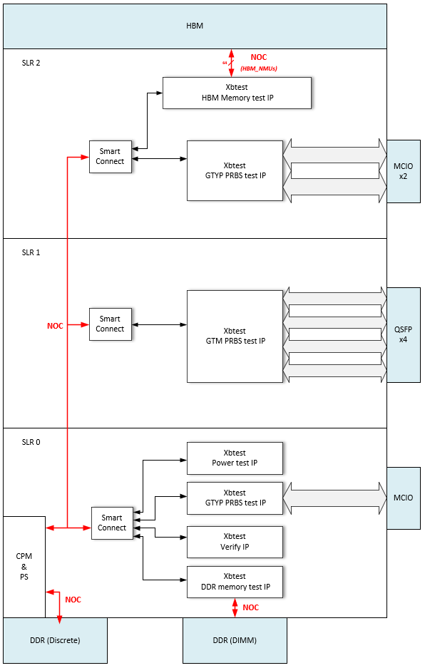
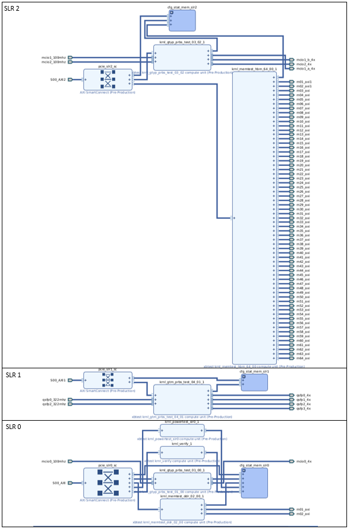

AVED V80/V80P - XBTEST Design¶
All AMD Alveo Versal™ example designs (AVEDs) provide configuration json files which enable a design containing xbtest IP to be generated. This IP provides an example of how a user may want to connect their own IP to the rest of the AVED design and to the memory and external interfaces that are available on that particular Alveo card.
As well as providing an example for developers, having xbtest in the AVED design also means that the AVED deployment package can be used to test your Alveo card, or to enable qualification testing on your HOST server.
AVED xbtest design¶
The AVED V80 and V80P xbtest designs have been tailored to suit their respective cards.
The V80 has 4xQSFP interfaces, 3xMCIO interfaces, HBM and DDR Memory spread out over 3 SLRs.
The V80P is very similar to the V80 with HBM and DDR Memory spread out over 3 SLRs. However, V80P does not have QSFP, MCIO, or DDR DIMM memory.
V80 Architectural Block Diagram

V80 IPI Block Diagram

Targeting a Multi SLR device¶
The xbtest design is architected so that its different IP cores only connect to the interface/memory resource within the SLR where they exist. This reduces paths which cross SLR boundaries and greatly eases timing closure of the design.
The xbtest IP is controlled by the xbtest SW which runs on the Host, and so is accessed via the PCIe interface provided by the CPM core in the Versal device. The CPM core is located in SLR0 and the xbtest IP is distributed across SLR0, SLR1 and SLR2. In AVED, we make use of the NOC to facilitate the distribution of this AXI control network over the multiple SLRs.
The 2 PCIe® ports from the CPM connect to the NOC NMUs in SLR0, and then the NOC is exited at different NSUs located in specific SLRs. The bus then connects to a Smart Connect before connecting to the various xbtest peripherals in that SLR.
Note: When selecting the NSU from which to exit the NOC, it is possible to select an NSU on any of the vertical NOC columns within that SLR. This can be used to help combat congestion in your design, and is used in the xbtest design to help spread out the xbtest logic with the aim of avoiding the creation of congestion hotspots in certain areas of the design.
Verify¶
The xbtest verify IP resides in SLR 0 and is used to verify that basic connectivity between the Host and xbtest IP is achieved via the PCIe interface.
MCIO Interfaces (V80 only)¶
The xbtest GTYP PRBS IP is used to test the MCIO interfaces in SLRs 0 and 2. Loopback modules are expected to be inserted into the MCIO interfaces on the card. This IP connects directly to the GTYP transceivers and uses a PRBS pattern when monitoring the traffic rate.
QSFP Interfaces (V80 only)¶
The xbtest GTM PRBS IP is used to test the 4 QSFP interfaces in SLR 1. Loopback modules are expected to be inserted into the QSFP interfaces on the card. This IP connects directly to the GTM transceivers and uses a PRBS pattern when monitoring the traffic rate.
DDR (V80 only)¶
The xbtest DDR Memory test IP contains multiple linear pattern traffic generators/monitors, which are used to test the read and write bandwidths and latencies while performing data integrity checks on the data transmitted to and received from the DDR DIMM on the V80.
On the V80 AVED design, xbtest is only used to test the DIMM and not the discrete DDR. This is because the discrete DDR is used to run the RPU’s execution code. This is also where the GCQ buffers are located. Running xbtest would be intrusive to the memories contents. Therefore, it is prevented from accessing the Discrete DDR so as to not overwrite the memory space which is being accessed by the RPU.
The xbtest IP connects to the DIMM’s DDRMC via the NOC and more details of how the NOC is configured to suit the xbtest IP are contained here AVED - NoC Configuration - DDR DIMM.
HBM¶
Like the xbtest DDR memory test IP, the xbtest HBM memory test IP also contains multiple linear pattern traffic generator/monitors, which are used to test the read and write bandwidths and latencies of the data transmitted to and received from the HBM memory.
More specifically, the HBM memory test IP has 64 generator/monitor pairs, each of which connects to one of the 64 available HBM_NMUs. Xbtest SW and the HBM configuration are optimized so that each of the 64 NMUs have access to a different region of HBM memory. The maximum theoretical HBM bandwidth of 820 GB/s is attempted to be achieved by clocking the HBM memory IP’s 64 x 256bit interfaces (to the HBM) at 400 MHz.
For more details on how the NOC is configured to access the HBM, see AVED - NoC Configuration - HBM.
Power¶
The xbtest power IP exists in all 3 SLRs. This IP is simply there to generate power consumption. It instantiates a large amount of DSPs, block RAMs and UltraRAMs and clocks these resources at 600 MHz. xbtest SW is able to manipulate the toggle signal to these resources in order to give a fine grained control of the power consumed by the card.
Page Revision: v. 22